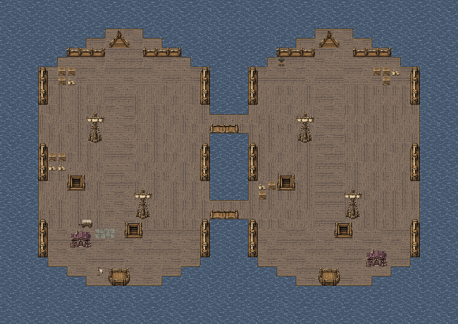
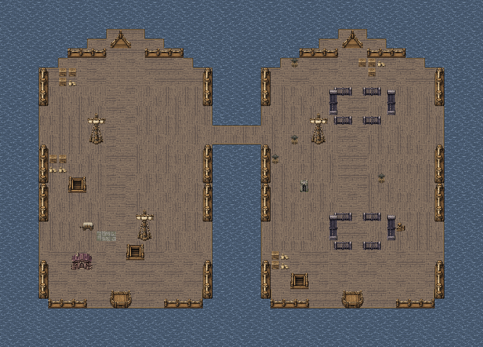
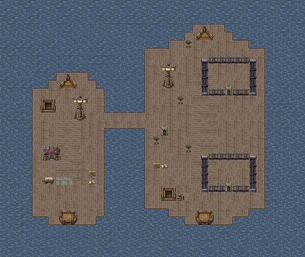
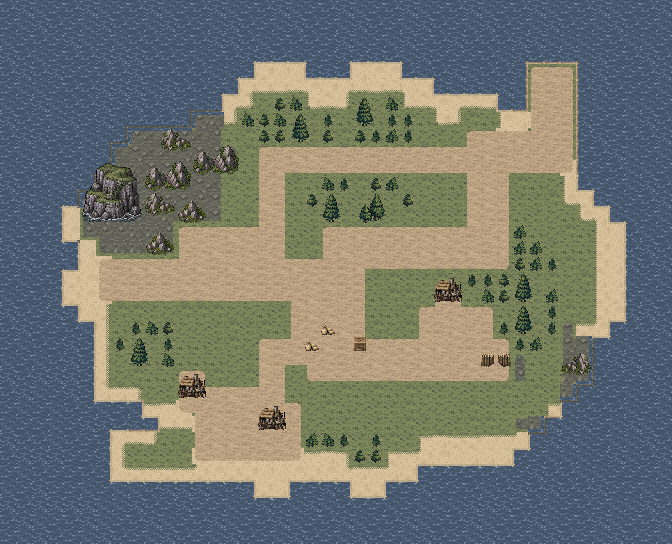
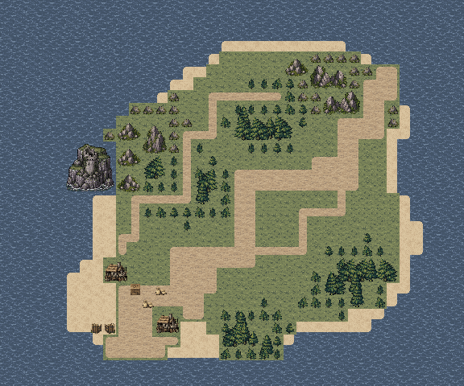
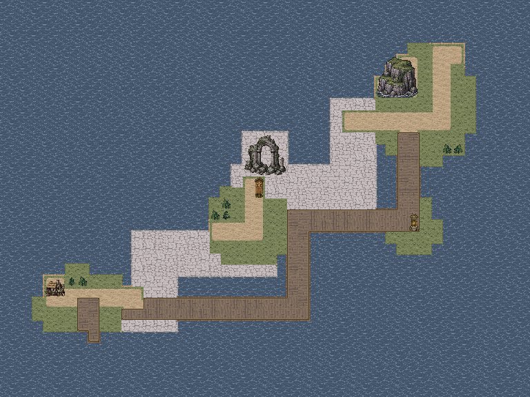
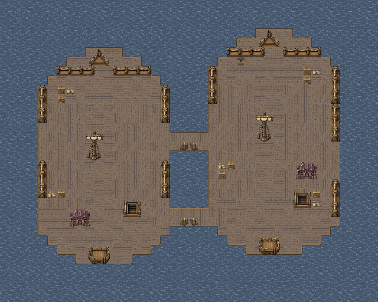
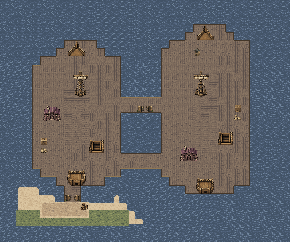
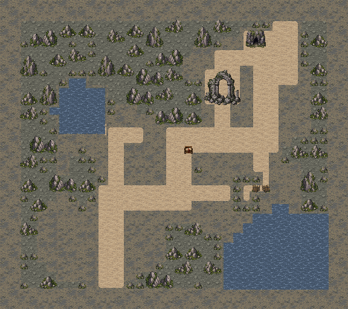

主路线
上方两格跳板连接两船前部战区，登舰后可沿敌舰中轴接近指挥官。
双舰接舷、囚舱救援、礁岛渔村、灯庭防守、湾岸军港、沿岸护航、漂泊病船与避潮洞厅分别组织构图。甲板、水道、岸线和建筑先建立真实关系，再安排部署与任务点；保留剧情、数值规则和现有动画。
前后地图均来自游戏原生渲染器；本轮收紧了地图尺寸，左右按各自完整边界展示，并非同像素比例的面积对比。点击原图可放大检查。
两艘错位舰船由船艏、作业甲板和后舱组成，己船后甲板安置船体旗位、伤者与休息舱。


上方两格跳板连接两船前部战区，登舰后可沿敌舰中轴接近指挥官。
下方两格跳板通敌舰后段，桅杆和舷边货物之间保留连续甲板。
可由两处同时登舰，也可留人守住己船与伤者；恢复格沿用原规则，不能代替正式成员的濒死救治。
蓝：候选部署；红：守军；金：剧情友军；绿：交互；紫：出口。路线仅为本页解释，不加入实机画面；F26另用青蓝与紫色画出两艘居民船的实际水路。实际通行以游戏地形为准。
前后两间实体囚舱沿敌舰中轴布置，接应旗位在中段跳板落点旁，与总闸相邻。


上跳板初始贯通，两船甲板与囚舱门前通道连成主要救援线。
下方备用跳板须在独立绞盘处放下后使用，提供后甲板支援路线。
先清理门前和撤离通道再开总闸；两扇牢门同时开放，三名普通俘虏必须存活抵达接应旗，洛德单独记录。
蓝：候选部署；红：守军；金：剧情友军；绿：交互；紫：出口。路线仅为本页解释，不加入实机画面；F26另用青蓝与紫色画出两艘居民船的实际水路。实际通行以游戏地形为准。
西南登陆湾和渔村围出后方营地，西岸旧瞭望塔与东北林崖标明岛屿两端。


两格村路从沙滩越过营地前方，转入东北草坡和首领高地。
西侧一格岩坡路绕林而行，东坡短路与主道形成清场回路。
护卫从营地前方展开，可分路清除魔物，但仍须照看身后的渔民；飞行敌人能跨越林崖，击败首领不能替代清场。
蓝：候选部署；红：守军；金：剧情友军；绿：交互；紫：出口。路线仅为本页解释，不加入实机画面；F26另用青蓝与紫色画出两艘居民船的实际水路。实际通行以游戏地形为准。
守灯塔屋、南门石阶和塔前航灯台组成中央防守地标，岛民与希雅留在南侧庇护村街。


南村两格主路直抵灯庭，前列部署能迅速进入守灯位置。
北岸一格登岛路与东岸两格登陆路汇入两翼，村落后路用于调防，东南岸承接援军。
留守灯位的单位与两翼应敌者需要分工，避免全员追向北口；第6己方回合起仍须首领败北且灯位安全，敌占整回合才会失败。
蓝：候选部署；红：守军；金：剧情友军；绿：交互；紫：出口。路线仅为本页解释，不加入实机画面；F26另用青蓝与紫色画出两艘居民船的实际水路。实际通行以游戏地形为准。
南仓入口、仓街、驻军院和北侧主楼逐层展开，东牢与木码头共同界定港湾。


两格仓街经过驻军院，通向主楼前庭的神教箱与账房门前。
东侧连续木码头绕过驻军院，接东牢南门和北哨；西仓房另有一格勤务道。
陆路便于推进与取箱，沿湾码头可侧进牢区与主楼；须兼顾取回神教箱、打开引航者牢门和击败裴萨，船员生死仍按原规则记录。
蓝：候选部署；红：守军；金：剧情友军；绿：交互；紫：出口。路线仅为本页解释，不加入实机画面；F26另用青蓝与紫色画出两艘居民船的实际水路。实际通行以游戏地形为准。
北岸古道与遗迹内侧支路通向西岸石门，两艘居民船从东泊口沿分离水道西行。


两格沿岸古道连接东泊口、岸上守军和西岸石门，护卫可沿岸提前清理威胁。
一格遗迹内侧小路绕过部分沿岸守军；居民船的内外两条水道独立，始终保持真实水面。
船队按原延迟与速度前进，近敌停航，岸上弓手和术士仍会威胁船体；护卫需先清岸线，至少一艘存活入泊且首领败北才胜利。
蓝：候选部署；红：守军；金：剧情友军；绿：交互；紫：出口。路线仅为本页解释，不加入实机画面；F26另用青蓝与紫色画出两艘居民船的实际水路。实际通行以游戏地形为准。
错位渔船通过前后跳板互援，两组病人安置在护卫后方的左船后甲板。


连续甲板接两处横向跳板，清场后沿南侧短跳板走向实际沙岸停泊口。
前后两处船间跳板提供换线与支援空间，舷边货物不压住护送走廊。
护卫先清理飞行与甲板敌人，再让病人靠岸；飞行魔物仍可绕过跳板，至少一组病人须存活撤离。
蓝：候选部署；红：守军；金：剧情友军；绿：交互；紫：出口。路线仅为本页解释，不加入实机画面；F26另用青蓝与紫色画出两艘居民船的实际水路。实际通行以游戏地形为准。
连续岩体刻出南避潮厅、遗物厅和北侧遗迹厅，边缘潮池与完整旧拱门区分各空间。


两格主巷从南厅经拱门中央开口通北洞口，南侧藏身室从唯一东门接回主巷。
一格西潮潭检修巷绕回遗物厅，遗物台和洞口避潮室各有短支路。
可先清理威胁再打开藏身室，让船员沿主巷安全撤离；仍需清场与取得遗物，旧船员生死按原规则分别记录。
蓝：候选部署；红：守军；金：剧情友军；绿：交互；紫：出口。路线仅为本页解释，不加入实机画面；F26另用青蓝与紫色画出两艘居民船的实际水路。实际通行以游戏地形为准。
八图完成两轮逐关实际输入复测，检查战后据点、救援、招募和主线接续。另从上一章真实完成记录起步，保留自然成长、伤情与招募结果，通过第二章八图并正常进入第三章。军港曾因自动试玩的跟随策略停滞；从同一T91记录续行，3个玩家回合内完成军港，继续完成断航护航与章末接续，没有重开战场或改写战斗状态。
囚舱栏杆补齐连续接缝，甲板按前后舱与货区分组；礁岛和灯岛去掉海岸亮色描线，保留实际沙滩，灯屋石阶连接守灯台；海洞外围改为连续岩层。两艘居民船使用分开的水路和泊位，避免停航或靠岸重叠。
1500项独立规则、连通与保存检查通过；24张实机视口文字安全区检查无错误。第一章与M41在内的其余32张地图保持原样，程序与人物动画代码沿用。
两轮逐关检查使用真实开发记录的隔离副本；普通按键完成移动、战斗、交互和结算，没有修改属性、随机结果或强制胜利。表内回合数受路线、命中和伤情影响，不代表固定难度。
初版海灯岛试玩把全队都按抢灯策略前压，艾琳在第3回合濒死；随后以洛德驻灯、其余单位据灯庭应敌完成复测，游戏规则未因此修改。早期驱动准备时曾与新图集首次写入相遇并记录纹理错误，该次仅用于入口脚本诊断，不计入最终两轮。最终轮次均在素材导入完成后启动。 礁岛初期前压与治疗时序也曾造成艾琳或卡洛倒下；定稿复测采用先守南营地、治疗后行动、优先处理绕后飞兵的同一策略，两次五名队员都存活。 整章连续样本在军港因测试驾驶器的治疗跟随约束原地等待，从精确T91状态改用健康前排推进后T93获胜，随后完成护航与第三章入口。章末一次西队字段断言因整数/浮点规范化误报；前后持久化字段核对一致，入口验证从同一章末记录继续。原始报告均保留。
未重新安装手机包；HTML资源与脚本检查不等同浏览器布局验收。